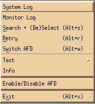
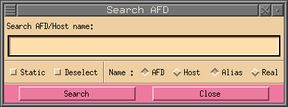
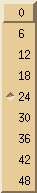

To control and monitor remote AFD's there is an X11 interface, with the
following appearance:
As shown this dialog is divided into four main areas: menu, heading,
connection and status.
The menu area has four pull down buttons: Monitor, RView, RControl and Setup.
If your mon_ctrl window does not have all buttons shown and described here,
then the system administrator did not allow you to use this function.

| System Log |
Allows you to view the system log of the afd_mon process. |
|
| Monitor Log |
Shows the log entries of any major activity of the remote AFD.
Such as loosing the connection or a shutdown of the AFD. |
|
| Search + (De)Select |
This allows to search for a given AFD (alias and real) name
in the mon_ctrl dialog, if name type AFD is selected. If the
name type Host is selected, it will search all AFD's for the
given host alias or real host name. The names can be entered
with wild cards. The found AFD's or hostnames will then be
selected. |
 |
| Retry |
If the remote AFD is red and the connection is back again it
might take more then two minutes before afd_mon retries. To
speed this up manually, press the retry button. |
|
| Switch AFD |
Switch AFD allows to change the destination address of
the selected AFD. |
|
| Test |
Test the connection to the selected AFD. Two tests are
possible, ping and traceroute. To make these visible you
must configure PING_CMD
and/or
TRACEROUTE_CMD in AFD_CONFIG file. |
![[Different tests to check network]](../images/test.png) |
| Info |
The Info button opens the mon_info
dialog for this AFD, showing some internal details of
this AFD. |
|
| Enable/Disable AFD |
If the monitored AFD is taken offline for a longer time you
can disable monitoring of the AFD with the help of this
button. |
|
| Exit |
Exit will close the mon_ctrl window and all other windows that
have been started from this dialog. It does not effect any of the
main process of afd_mon running in the background. |
|
| AFD Control |
This opens the afd_ctrl dialog,
for the selected AFD. |
|
| System Log |
System Log opens the
system dialog of the selected AFD. See
Log Files for a more detailed
description of the output. |
|
| Event Log |
Event Log opens the
event dialog of the selected AFD. See
Log Files for a more detailed
description of the output. |
|
| Transfer Log |
Transfer Log opens the transfer
dialog. See Log Files
for a more detailed description of the output. |
|
| Input Log |
Input Log opens the input dialog.
See Log Files for a more detailed
description of the output. |
|
| Output Log |
Output Log opens the output dialog.
See Log Files for a more detailed
description of the output. |
|
| Delete Log |
Delete Log opens the delete dialog.
See Log Files for a more detailed
description of the output. |
|
| Queue |
Queue opens the queue dialog. Here
you can see all files being queued by the selected AFD. |
|
| Load |
Load shows the current load of either: Files send per second,
KBytes send per second, Connections done per second and the number
of Active-Transfers. |
![[Choice of different loads]](../images/load.png) |
| Start/Stop AMG |
This starts or stops the AMG. Stopping the
AMG means that no more messages will be generated for the FD. FD
will continue distributing as long as there are files queued. |
| Start/Stop FD |
This starts or stops the FD. Stopping the FD
should only be done for a short time on systems with lots of
traffic. Otherwise the AMG keeps generating messages until
the file system is full or it cannot create any new directories to
store the files. |
| Reread DIR_CONFIG |
When there have been any changes made in the
DIR_CONFIG file and these changes
should be activated, press this button. If there where any changes
in the HOST_CONFIG file it will incorporate these changes as well.
So it is not necessary to press the Reread HOST_CONFIG button. |
| Reread HOST_CONFIG |
To activate changes made by editing the
HOST_CONFIG file manually
(not using the edit_hc dialog),
press this button. When you use edit_hc
dialog to make changes to the HOST_CONFIG it will not be necessary
to press this button, the Update button of that dialog will
perform this task. |
| Edit Host |
Opens the edit_hc dialog, where
you can make changes to each host shown by the afd_ctrl dialog.
If a host has been selected this will then be the selected host
when edit_hc dialog starts. |
| Directory Control |
This button shows the dir_ctrl dialog, which shows all directories
monitored by AFD. |
| Startup AFD |
Starts the AFD by starting init_afd which in turn will start
all process necessary for AFD to run. |
| Shutdown AFD |
Will do a shutdown of AFD. |
| Font size |
Pressing Font size will give you a list of fonts which,
when selected, will be used for the afd_ctrl window and all other
windows called from it. It might be that your X server does
not support all fonts shown on the right hand, then you will
be shown less fonts. |
![[Fonts that can be selected]](../images/font_size.png) |
| Number of rows |
Number of rows allows to change the maximum number of rows
to be displayed for one column. |
![[list of row numbers that may be selected]](../images/number_of_rows.png) |
| Line Style |
Line Style allows to change the appearance of a single line.
You can currently choose four different items: Leds, Process,
Characters and Bars. Default will be that all four items will
be visible. If you do have a very large number of hosts you can
deselect some items to reduce the window size of the afd_ctrl
dialog. |
![[Possible line styles that can be selected]](../images/line_styles.png) |
| History Length |
History Length allows to change the length of log history
for receive, system and transfer log. |
 |
| Save Setup |
Save Setup will save the above settings in the file
.afd_ctrl.setup.@. in the users home
directory. So when you start afd_ctrl again it will start with
these settings. |
|
The heading is just a quick reminder of what the fields in the
connection area mean:
| AFD |
The alias name of the AFD that is being monitored. |
| fc |
This is the file counter field. It shows the total number files that
are still to be distributed. |
| fs |
The total file size that is still to be distributed. |
| tr |
Shows the overall current transfer rate. |
| fr |
Shows the overall current file rate in files per second. |
| jq |
The number of jobs in the queue. |
| at |
The total numbers of active transfers. |
| ec |
This is the total number of errors. It does NOT count
the errors of a host that is red. |
| eh |
This is the total number of hosts that are red. |
The connection area is the actual area which monitors and controls the
other AFD's. The meaning of each field is shown below:
| 1 |
AFD alias |
This field holds the name of the AFD alias. The background
color indicates the current status of the connection:
|
Connected to remote AFD. Normal status. |
|
Connecting phase. |
|
Error. The connection to this AFD is broken or it has
been shut down. |
|
This AFD is disabled. afd_mon will not monitor this AFD. |
|
This AFD is not being monitored. This can be due to the
AFD currently being shutdown or more likely because afd_mon
is not running any more. |
|
| 2 |
AMG |
LED to show current status of process AMG (Automatic Message
Generator).
 |
Normal status. Process is up and running. |
 |
Process has terminated normally. |
 |
Abnormal termination. Process has been killed and is
not running any more. |
NOTE: This LED must be so
that the AFD can function properly.
|
| 3 |
FD |
LED to show current status of process FD (File Distributor).
|
Normal status. Process is up and running. |
|
Process has terminated normally. |
|
Abnormal termination. Process has been killed and is
not running any more. |
NOTE: This LED must be so
that the AFD can function properly.
|
| 4 |
Archive Watch |
LED to show current status of process Archive Watch.
|
Normal status. Process is up and running. |
|
Process has terminated normally. |
 |
Abnormal termination. Process has been killed and is
not running any more. |
|
| 5 |
System Log |
Radar that shows the five last type of messages in the system log. It
can have the following colors: 
| Color |
Log Symbol |
Description |
 |
<I> |
Information, nothing serious. |
 |
<C> |
Configuration, something has been configured. |
 |
<W> |
Warning. Most properly a configuration error, nothing to
be nervous about. |
 |
<E> |
Error, AFD should still be able to continue, but something
is wrong! |
 |
<F> |
A fatal error has occurred, the process involved has most
properly terminated abnormally. Now you should really be
nervous! |
 |
<#> |
Dummy sign. Is used for showing a new month in the system
log or when there is garbage in the log file. |
|
| 6 |
Receive Log History |
Here you can see up to 48 hours of what has happened in the receive
log. It shows the current hour on the right hand side and will move
one position to the left every hour. Each square represents one hour
and the color will be always the one with the highest severity
that has occurred during that hour. The order is as follows, starting
with the highest severity:
Fatal ,
Error ,
Warn and
Info . |
| 7 |
System Log History |
Same as above only for the system log and that it will have more
colors. The order of the colors here is as follows, again starting
with the highest severity:
Fatal ,
Error ,
Warn ,
Config ,
Info and
Dummy (date, etc) |
| 8 |
Transfer Log History |
See Receive Log History above. |
| 9 |
File Counter |
Total number of files that still have to be send. |
| 10 |
File Size |
Total number of bytes that still have to be send. The last
character always shows the current unit: B for Bytes, K for
Kilo Bytes, M for Mega Bytes, G for Giga Bytes and T for Tera
Bytes. |
| 11 |
Transfer Rate |
Displays the total current transfer rate of all connections. |
| 12 |
File Rate |
Displays the total number of files send per second. |
| 13 |
Jobs in Queue |
Displays the number of jobs in the queue. |
| 14 |
Active Transfers |
The number of process currently distributing data. |
| 15 |
Error Counter |
Number of errors that occurred. It does not include the errors
of red hosts (ie. failed hosts), otherwise the numbers here would
get so large that one does not see if a new one starts to get
errors. If this field is not zero you can click on it with the
left mouse button and you will receive a list of host names with
errors and the last three errors for each host. |
| 16 |
Error Hosts |
Number of hosts that are red. If this field is not zero you can
click on it with the left mouse button and you will receive a
list of host names with errors and the last three errors for each
host. |
| 17 |
Error Host Bar |
Displays a bar for the number of hosts that are red. The
color of the bar will always be red. |
| 18 |
Active Transfers Bar |
Displays a green bar to display the number of active transfers,
that will increasingly turn blue the more transfers are active.
A deep blue bar in it full length indicates that the FD has
reached its maximum number of process that may be forked to
distribute data. |
| 19 |
Transfer Rate Bar |
Displays a yellow bar to display the overall current transfer rate
graphically. |
Selecting can be done by either holding down the shift key and pressing the
left mouse button (temporary selection) or by holding the ctrl key and the
left mouse button (permanent selection). The background of the line will
change to black or grey respectively.
The status line at the bottom gives some information about afd_mon and
whats in its log files.
| 1 |
afd_mon |
LED to show current status of process afd_mon.
|
Normal status. Process is up and running. |
|
Process has terminated normally. |
|
Abnormal termination. Process has been killed and is
not running any more. |
|
| 2 |
Monitor System Log |
Radar that shows the five last type of messages in the
monitor system log.
It can have the following colors:
| Color |
Log Symbol |
Description |
|
<I> |
Information, nothing serious. |
|
<C> |
Configuration, something has been configured. |
|
<W> |
Warning. Most properly a configuration error, nothing to
be nervous about. |
|
<E> |
Error, afd_mon should still be able to continue, but something
is wrong! |
|
<F> |
A fatal error has occurred, the process involved has most
properly terminated abnormally. Now you should really be
nervous! |
|
<#> |
Dummy sign. Is used for showing a new month in the system
log or when there is garbage or no information in the log
file. |
|
| 3 |
Monitor Log |
Radar that shows the five last type of messages in the monitor log.
It can have the following colors:
| Color |
Log Symbol |
Description |
|
<I> |
Information, nothing serious. |
|
<W> |
Warning. A host could not be reached and it automatically
switched over to the backup system. |
|
<E> |
Error. Could not connect to remote AFD, etc. |
|
<F> |
A fatal error has occurred, the process involved has most
properly terminated abnormally. |
|
| 4 |
Clock |
Digital clock showing the time in 24h format. |
![[control popup]](../images/control_popup.png)
![[red dot]](../images/reddot.gif) Index
Index